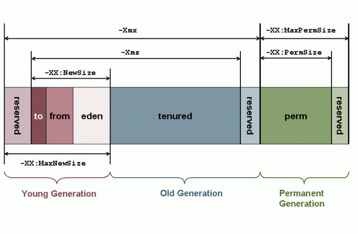

JVM Run-Time Data Area
这篇主要是阅读Java虚拟机规范做的摘录和笔记。https://docs.oracle.com/javase/specs/jvms/se8/html
JVM运行时数据区域只是JVM结构体系的一部分，主要是针对内存分布。
JVM在一个程序执行期间定义了不同的运行时数据区域来让程序使用，大体上分为两类：
- JVM启动时创建的Data Area,只能在JVM退出时销毁
- 每个线程创建的Data Area, 只能在线程退出时销毁

一. The pc(program counter) Register(寄存器)
程序计数器记录了当前指令执行的地址，每个线程都会创建程序计数器，当一个方法为native时，程序计数器的值为undefined，
只有方法不是native时，程序计数器才会执行指令。
二. Java Virtual Machine Stacks
每一个虚拟机线程都有私有的随线程同时创建的JVM stack，JVM stack用来存储frames。JVM stack有点和C语言的stack相似，它存储本地变量和部分结果，是触发方法执行和返回的一部分，因为stack不能直接操纵除了入栈出栈，frames也由Heap来分配，所以它不需要里内存很近。JVM的实现提供了可以由程序或者用户来控制stack的大小，stack的大小可以是动态的，也可以是固定大小的，以下两种情况的异常会和JVM stack有关：
- 如果一个线程内执行的计算需要超过被允许的stack大小的限制，JVM抛出StackOverflowError
- 如果stack可以动态扩张，但是尝试扩大的大小超过了内存的大小，JVM抛出OutOfMemoryError
三. Heap
JVM Heap被所有线程共享，它为所有class实例和数组分配内存。堆在JVM启动时创建，存储对象的堆空间被自动存储管理系统（垃圾回收）再利用，对象从不会显式地被释放。堆的内存空间不需要连续。当需要更多堆空间而超过自动存储管理系统所能提供的大小时，JVM抛出OutOfMemoryError

四. Method Area
JVM的方法区同样也是被所有线程共享。方法区域类似于传统语言的编译代码的存储区域或类似于操作系统进程中的“文本”段的存储区域，（谷歌翻译而来，需要更进一步理解）。方法区存储了每个类的结构，例如运行时常量池，域，方法数据以及包括类接口实例化时的特殊方法的代码。方法区在JVM启动时创建，尽管方法区是堆的逻辑上的部分，简单的实现也许不会被垃圾回收或者压缩。这个特性不需要方法区管它的位置以及管理编译代码的策略。方法区大小可固定，可扩展，内存不需要连续。同样方法区大小不够也会抛出
OutOfMemoryError异常。
五. Run-Time Constant Pool
运行时常量池是一个记录每个类或者接口类信息的表，包含各种不同类型的常量，每个常量池表由JVM方法区分配，并且在类或者接口构造时由JVM创建，构造阶段如果内存分配不足同样也会抛出OutOfMemoryError异常。
六. Native Method Stacks
本地方法栈JVM用传统栈的实现来支持不同语言写的方法，同样也用来被一种语言的解释器的实现来解释JVM的指令集。
本地方法栈内存大小不够时抛出StackOverflowError或者OutOfMemoryError异常。